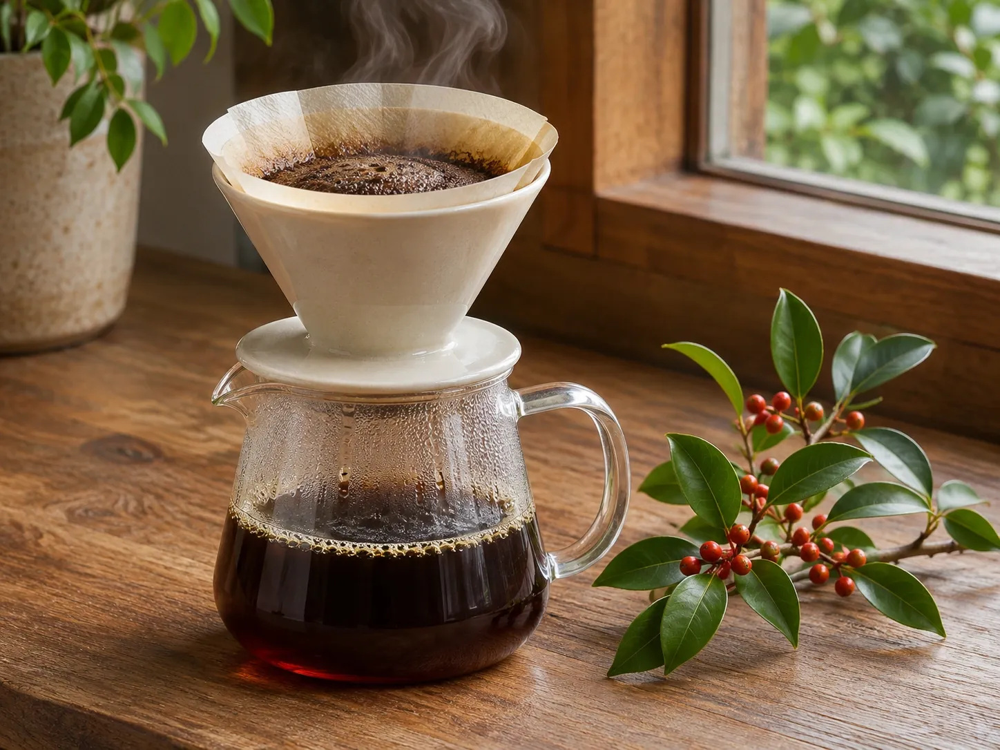

CONCEPT
感動できるコーヒーづくりを
目指して
冬青珈琲店（SOYOGO COFFEE）は、愛知県長久手市の公園の北口駐車場のそばにある、スペシャルティコーヒーのロースターです。 収穫から1年以内の豆を買い付け、未熟な豆や欠点のある豆を、人の目でひとつずつ取りのぞいています。
Truly Great Specialty Coffee
焙煎は、その日の気温や湿度、豆の状態に合わせて、つきっきりで。テイスティングをして合格したものだけを、お客様へ。
なんだか小さな同窓会のような、うれしい時間でした。 公式Instagramより（イベントへの出店をふりかえって）
長久手のお店に来てくださる方、イベントで毎回会う方、はじめて飲んでくださる方。一杯のコーヒーをきっかけに、出会いと再会が生まれています。
